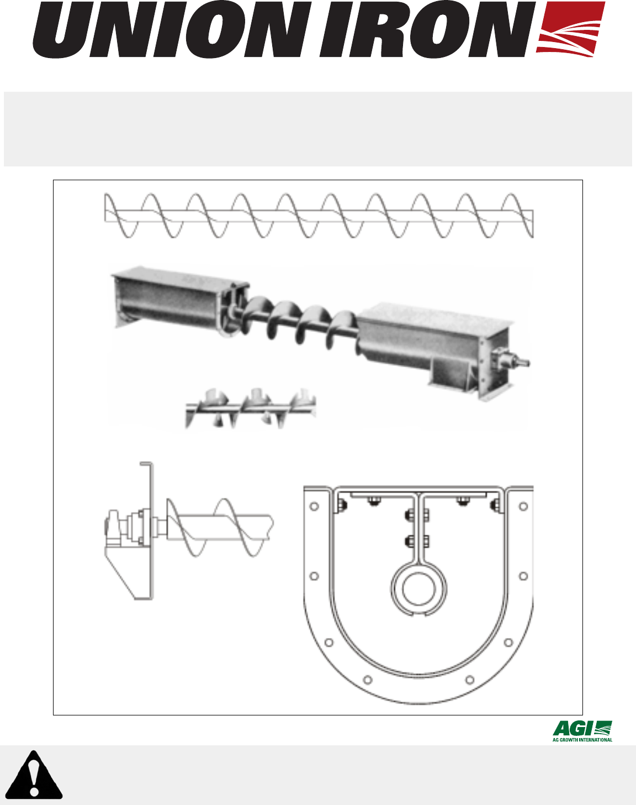
Part Number: ISCM0308-R1
Revised: Jun/17
Read this manual before using product. Failure
to follow instructions and safety precautions can
result in serious injury, death, or property
damage. Keep manual for future reference.
SCREW CONVEYOR
ALL MODELS
ASSEMBLY & OPERATION
This product has been designed and constructed according to general engineering
standards
a
. Other local regulations may apply and must be followed by the operator.
For this reason, we strongly recommend that all personnel associated with this
equipment be trained in the correct operational and safety procedures required for this
product. Periodic reviews of this manual with all employees should be standard
practice. For your convenience, we include this sign-off sheet so you can record your
periodic reviews.
a. Standards could include organizations such as the American Society of Agricultural and Biological Engi-
neers, American National Standards Institute, Conveyor Equipment Manufacturers’ Association...
Date Employee Signature Employer Signature

ISCM0308-R1 3
UNION IRON SCREW CONVEYOR
ALL MODELS
TABLE OF CONTENTS
1. Introduction .......................................................................................................................... 5
2. Safety First............................................................................................................................ 7
2.1. General Safety ......................................................................................................... 9
2.2. Assembly Safety....................................................................................................... 9
2.3. Operational & Maintenance Safety......................................................................... 11
2.3.1. Lockout and Tagout Procedures .............................................................. 12
2.4. Safety Decal Locations........................................................................................... 12
2.4.1. Decal Installation ...................................................................................... 12
2.4.2. Decal Locations........................................................................................ 13
3. Assembly ............................................................................................................................ 15
3.1. Pre-Assembly......................................................................................................... 15
3.2. Conventional Conveyor Screws ............................................................................. 16
3.3. Quick-Connect Screw Assembly............................................................................ 19
3.3.1. Split Flight Coupling and Shafts ............................................................... 20
4. Operation ............................................................................................................................ 23
4.1. Pre-Operation......................................................................................................... 23
4.2. Start-Up.................................................................................................................. 23
4.2.1. Without Material........................................................................................ 23
4.2.2. With Material............................................................................................. 24
4.3. Extended Shutdown ............................................................................................... 24
5. Maintenance ....................................................................................................................... 25
5.1. Servicing Of Conveyor Components...................................................................... 25
5.1.1. Conventional Conveyor Screws ............................................................... 25
5.1.2. Quick-Connect Conveyor Screws............................................................. 25
5.1.3. Couplings and Hangers............................................................................ 26
5.1.4. Drive End Bearings................................................................................... 27
5.1.5. Covers ...................................................................................................... 29
5.2. Lubrication.............................................................................................................. 29
5.2.1. Drive ......................................................................................................... 29
5.2.2. Ball or Roller Bearings.............................................................................. 29
5.2.3. Babbitted or Bronze Bushed Bearings ..................................................... 29
Limited Warranty..................................................................................................................... 31

4 ISCM0308-R1
UNION IRON SCREW CONVEYOR
ALL MODELS
1. INTRODUCTIONUNION IRON - SCREW CONVEYOR
ALL MODELS
ISCM0308-R1
5
1. Introduction
This manual contains complete instructions for the installation, operation, and
maintenance of Union Iron Screw Conveyors. The reliable operation and long
service life of these conveyors depends to a great extent on the care taken
during installation and operation, and consistent maintenance.
Because of variations in length and installation conditions, screw conveyors are
usually shipped as sub-assemblies. All components are manufactured to the
standards of the Conveyors Equipment Manufacturers’ Association (CEMA).
Union Iron will design and manufacture special components for unusual
requirements. Conveyors can be ordered as complete units—shop assembled,
and match-marked before shipping—or as individual components to be aligned
and assembled in the field.
When Union Iron engineers the conveyor, complete specification drawings are
furnished. Supplementary instructions should be followed for components not
furnished by Union Iron. Components installed without the approval of Union
Iron become the sole responsibility of the purchaser or final user.
Before using this equipment, this manual should be given to the people who
will be operating and maintaining this equipment. Reading and understanding
this manual will reduce downtime and equipment failure, as well as ensure safe
and efficient operation. A sign-off form is provided on the inside front cover for
your convenience.
The serial number plate is located on the side of the first trough section behind
the drive. Please mark the number in the space provided for easy reference.
Model#
Serial #
Production Year
2. SAFETY FIRSTUNION IRON - SCREW CONVEYOR
ALL MODELS
ISCM0308-R1
7
2. Safety First
The Safety Alert symbol identifies important safety messages on the product
and in the manual. When you see this symbol, be alert to the possibility of
personal injury or death. Follow the instructions in the safety messages.
Why is SAFETY important to you?
Three big reasons:
• Accidents disable and kill.
• Accidents cost.
• Accidents can be avoided.
SIGNAL WORDS
Note the use of the signal words DANGER, WARNING, CAUTION, and
NOTICE with the safety messages. The appropriate signal word for each
message has been selected using safety as a guideline.
This Safety Alert symbol means ATTENTION, BE ALERT!, YOUR SAFETY IS
INVOLVED.
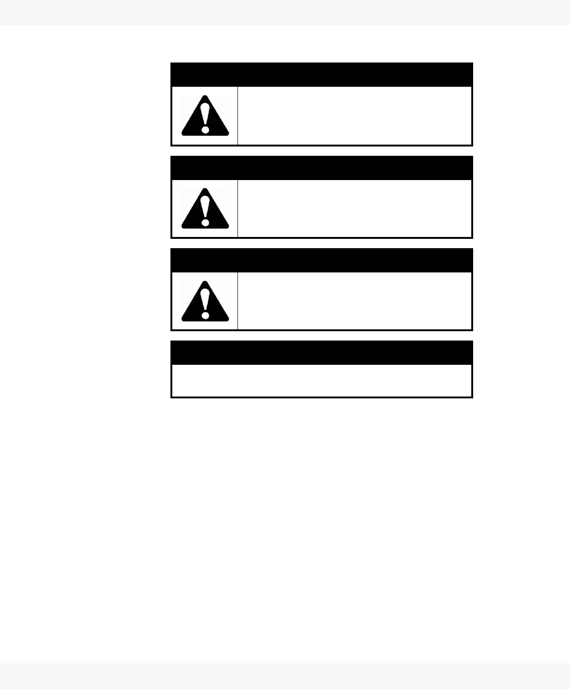
2. SAFETY FIRST UNION IRON - SCREW CONVEYOR
ALL MODELS
8 ISCM0308-R1
YOU are responsible for the SAFE use and maintenance of your product. YOU
must ensure that you and anyone else who is going to work around the product
be familiar with all procedures and related SAFETY information contained in
this manual.
Remember, YOU are the key to safety. Good safety practices not only protect
you, but also the people around you. Make these practices a working part of
your safety program.
• Product owners must give instructions to employees before allowing
them to operate or use the product.
• The most important safety device on this product is a SAFE user or
operator. It is the user/operator's responsibility to read and understand
DANGER
DEFINITION: Indicates an imminently
hazardous situation that, if not avoided, will
result in serious injury or death. This signal
word is limited to the most extreme situations.
WARNING
DEFINITION: Indicates a hazardous situation
that, if not avoided, could result in serious
injury or death.
CAUTION
DEFINITION: Indicates a hazardous situation
that, if not avoided, may result in minor or
moderate injury.
NOTICE
DEFINITION: Indicates a potentially hazardous situation
that, if not avoided, may result in property damage.

2. SAFETY FIRSTUNION IRON - SCREW CONVEYOR
ALL MODELS
ISCM0308-R1
9
ALL safety instructions in the manual and to follow them. All accidents
can be avoided.
• A person who has not read and understood all safety instructions is not
qualified to operate or use the product. Untrained users/operators
expose themselves and bystanders to possible serious injury or death.
• Do not modify the product in any way. Unauthorized modification may
impair the function and/or safety, and could affect the life of the product.
Any modification to the product voids the warranty.
• Use this product for its intended purposes only.
• Think SAFETY! Work SAFELY!
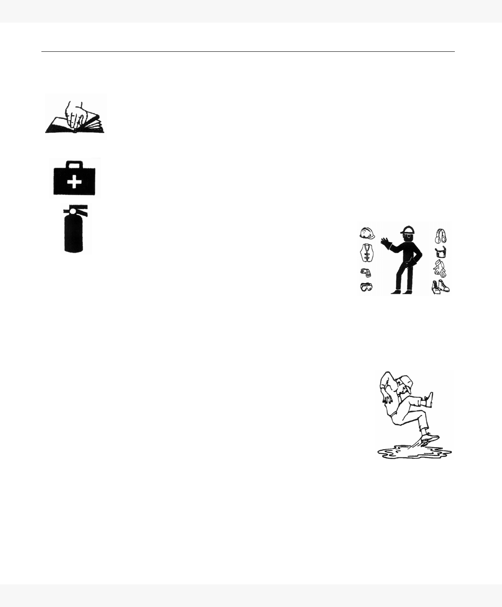
2. SAFETY FIRST
2.1. GENERAL SAFETY
UNION IRON - SCREW CONVEYOR
ALL MODELS
10 ISCM0308-R1
2.1. GENERAL SAFETY
Important: The general safety section includes instructions that apply to all safety
practices. Any instructions specific to a certain safety practice (e.g. assembly
safety), can be found in the appropriate section.
• Read and understand all safety instructions, safety decals, and manual(s)
before operating equipment.
• Only trained, competent people shall operate or use the product. An
untrained operator is not qualified to operate equipment.
• Have a first-aid kit available for use should the need arise, and know how to
use it.
• Provide a fire extinguisher for use in case of an accident. Store in a highly
visible place.
• Do not allow children, spectators, or bystanders within the work area.
• Wear appropriate protective gear. This list includes,
but is not limited to:
• a hard hat
• protective shoes with slip-resistant soles
• protective goggles
• hearing protection
• For powered products: before servicing, adjusting, or repairing, unplug,
place all controls in neutral or off position, stop the engine or motor, remove
ignition key or lock out power source, and wait for all moving parts to stop.
• Review safety information initially and annually with all personnel who will
be using the product.
• Follow good shop practices:
• Keep service area clean and dry.
• Be sure electrical outlets and tools are properly
grounded.
• Use adequate light for the job at hand.
2. SAFETY FIRSTUNION IRON - SCREW CONVEYOR
ALL MODELS 2.2. ASSEMBLY SAFETY
ISCM0308-R1 11
2.2. ASSEMBLY SAFETY
• Have 2 people handle the heavy, bulky components.
• All equipment should be checked for damage immediately upon arrival. Do
not attempt to install a damaged item.
• If the equipment must have an open housing as a condition of its use and
application, it must be guarded by a railing or fence.
• Use rugged gratings where necessary. If the distance between the grating
and moving elements is less than 4”, the grating opening must not exceed
1/2” x 1” (or 1/2” x 2” for hopper gratings). Covers, guards, and gratings at
inlet points must be such that personnel cannot be injured in any way.
• Solid covers should be used at all other points and must be designed
and installed so that personnel will not be exposed to accidental contact
with any of the equipment’s moving parts.
• Inlet and discharge openings shall be connected to other equipment in
order to completely enclose the equipment.
• As required by applicable laws, standards, and good practice, the pur-
chaser/owner is responsible for:
• guarding all rotating equipment such as drives, gears, shafts, and cou-
plings
• purchasing and providing safety devices and controls
• Before power is connected to the drive, a pre-start-up safety check shall be
performed to ensure the equipment and area is safe for operation and all
guards are in place and secure.
• Electrical equipment must conform to the National Electric Code or National
Electrical Safety Code, including requirements for the environment. Also
consider:
• Overflow devices (electrical interlocks) to warn personnel and shut off
power when discharge from conveyor is interrupted.
• Overload protection for devices (shear pins, torque limiters, etc.) and no-
speed protection (zero-speed switches) to shut off power in the event of
an incident that might cause the conveyor to stop operating.
• Safety shut-off switch with power lockout provisions at conveyor drive.
• Emergency stop switches readily accessible.
• Electrical interlocking to shut down feeding conveyors whenever a
receiving conveyor stops.
• Signal devices to warn personnel of imminent start up of conveyor,
especially if started from a remote location.
2. SAFETY FIRST
2.3. OPERATIONAL & MAINTENANCE SAFETY
UNION IRON - SCREW CONVEYOR
ALL MODELS
12 ISCM0308-R1
2.3. OPERATIONAL & MAINTENANCE SAFETY
Electrical controls, machinery guards, railings, walkways, arrangement of
installation, training of personnel, etc., are necessary for a safe working
environment. It is the responsibility of the contractor, installer, owner, and user
to supplement the materials and services furnished with the necessary items to
make the conveyor installation comply with the law and accepted standards.
• Conveyors are not to be operated unless all covers/guards are in place.
• Keep all operating personnel advised of the location and operation of all
emergency controls and devices. Clear access to these controls and
devices must be maintained.
• Do not place hands, feet, or any part of your body or clothing in the con-
veyor.
• Never walk on conveyor covers, gratings, or guards.
• Do not use conveyor for any purpose other than that which it was intended.
• Do not poke or prod material into the conveyor with a bar or stick inserted
through the openings.
• Conveyors are not normally manufactured or designed to handle materials
that are hazardous to personnel. Materials that are hazardous include those
that are explosive, flammable, toxic, or otherwise dangerous to personnel.
Conveyors may be designed to handle these materials. Conveyors are not
manufactured to comply with local, state, or federal codes for unfired pres-
sure vessels. If hazardous material is to be conveyed, or if the conveyor is
to be subjected to internal or external pressure, Union Iron should be
consulted prior to any modifications.
• Be aware of hazardous locations: where, without protection, people may be
injured by contact with conveyor or material. If conveyor blocks a walkway,
provide a crossover stairway or ramp for passage of personnel. If installed
overhead, minimum clearance should be 7” for safety.
• Handling foodstuffs subjects conveyors to special codes for construction,
location, and accessibility. Investigate before ordering standard compo-
nents! Food conveyors often require hinged access doors for drop-bottom
trough cleaning; such doors require special safety controls and procedures
by customer to prevent personnel injuries. Extensive use of padlocks, with
keys in the hands of only management personnel, is one means frequently
used.
• Do not attempt a field modification of conveyor or components.
• Perform frequent inspections of these controls and devices, covers, guards,
and equipment to ensure proper working order and correct positioning.
The Conveyor Equipment Manufacturer's Association (CEMA) has produced
an audiovisual presentation entitled "Safe Operation of Screw Conveyors,
Drag Conveyors, and Bucket Elevators." Union Iron encourages acquisition
and use of this source of safety information.

2. SAFETY FIRSTUNION IRON - SCREW CONVEYOR
ALL MODELS 2.4. SAFETY DECAL LOCATIONS
ISCM0308-R1 13
2.3.1. LOCKOUT AND TAGOUT PROCEDURES
To minimize possibility of serious injury or death to workers from hazardous
energy release (for example, when restarting the equipment) and prevent
worker deaths from all forms of hazardous energy release (restarting of
equipment), we recommend that you follow all lockout and tagout procedures
when installing and servicing equipment. Ensure that all OSHA procedures are
adhered to, for example:
• De-energize, block, and dissipate all sources of hazardous energy.
• Lock out and/or tag out all forms of hazardous energy.
• Ensure that only 1 key exists for each assigned lock, and that you are
the only one that holds that key.
• After verifying all energy sources are de-energized, service or installa-
tion may be performed.
• Ensure that all personnel are clear before turning on power to equip-
ment.
For more information on occupational safety practices, see www.osha.gov.
2.4. SAFETY DECAL LOCATIONS
• Keep safety decals clean and legible at all times.
• Replace safety decals that are missing or have become illegible.
• Replaced parts that displayed a safety decal should also display the current
decal.
• Safety decals are available from your distributor, dealer, or factory.
2.4.1. DECAL INSTALLATION
1. Be sure that the installation area is clean and dry, and that the temperature
is above 10°C (50°F).
2. Decide on the exact position before you remove the backing paper.
3. Align the decal over the specified area and carefully press the small portion
with the exposed sticky backing in place.
4. Slowly peel back the remaining paper and carefully smooth the remaining
portion of the decal in place.
5. Small air pockets can be pierced with a pin and smoothed out using the
piece of sign backing paper.

2. SAFETY FIRST
2.4. SAFETY DECAL LOCATIONS
UNION IRON - SCREW CONVEYOR
ALL MODELS
14 ISCM0308-R1
2.4.2. DECAL LOCATIONS
The types of safety decals and locations on the equipment are shown below.
Good safety requires that you familiarize yourself with the various safety
decals, the type of warning, and the area or particular function related to that
area that requires your SAFETY AWARENESS.
If safety signs have been damaged, removed, become illegible, or parts were
replaced without safety signs, new signs must be applied. New safety signs are
available from your authorized dealer.
• Decal 1 (General Equipment Warning) must be placed in a convenient loca-
tion on the equipment.
• Decal 2 (Rotating Parts Hazard) is placed on and behind the belt or chain
guard.
•
• Decal 3 (Rotating Auger Hazard) is placed on all inspection and access
opening covers, as well as trough covers.
• Decal 4 must be placed in a convenient location on the equipment.
• Decal 5 (Electrocution Hazard) must be placed on the motor conduit boxes.
DECAL 2 -
P200-0007
DECAL 3 -
P200-0015
DECAL 1 -
P200-0017
DECAL 4 -
P200-0020
DECAL 5 -
P200-0019
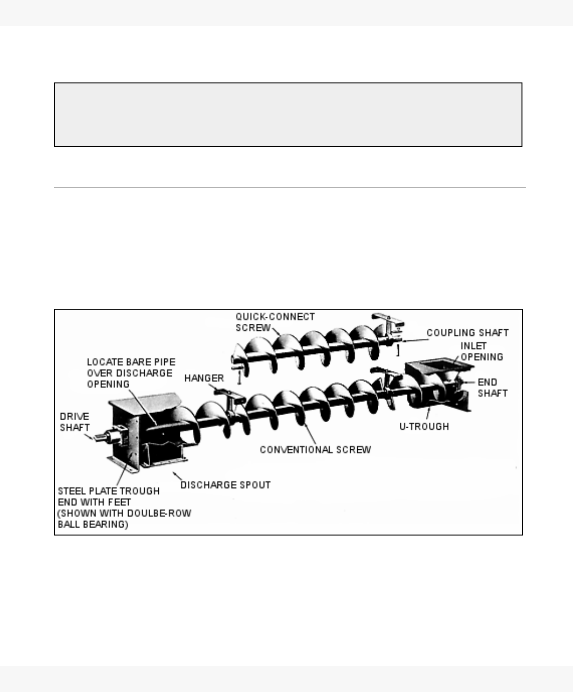
3. ASSEMBLYUNION IRON - SCREW CONVEYOR
ALL MODELS 3.1. PRE-ASSEMBLY
ISCM0308-R1 15
3. Assembly
3.1. PRE-ASSEMBLY
1. Check all assemblies and parts against shipping papers, and inspect for
damage on arrival. Look for dented or bent trough, flanges, flighting, pipe,
or hangers. Minor damage incurred in shipping can often be easily repaired
in the field.
• For severely damaged parts, file an immediate claim with the carrier.
2. Before proceeding with assembly, make sure that all supplementary
instructions are included. If anything is missing, contact Union Iron.
Figure 3.1
Figure 3.1 illustrates only of a few of the many types of components that are
available for various applications and operating conditions. However, the basic
function of each component remains the same, regardless of design variations.
WARNING
Before continuing, please reread the safety information relevant to this section at the begin-
ning of this manual. Failure to follow the safety instructions can result in serious injury, death,
or property damage.
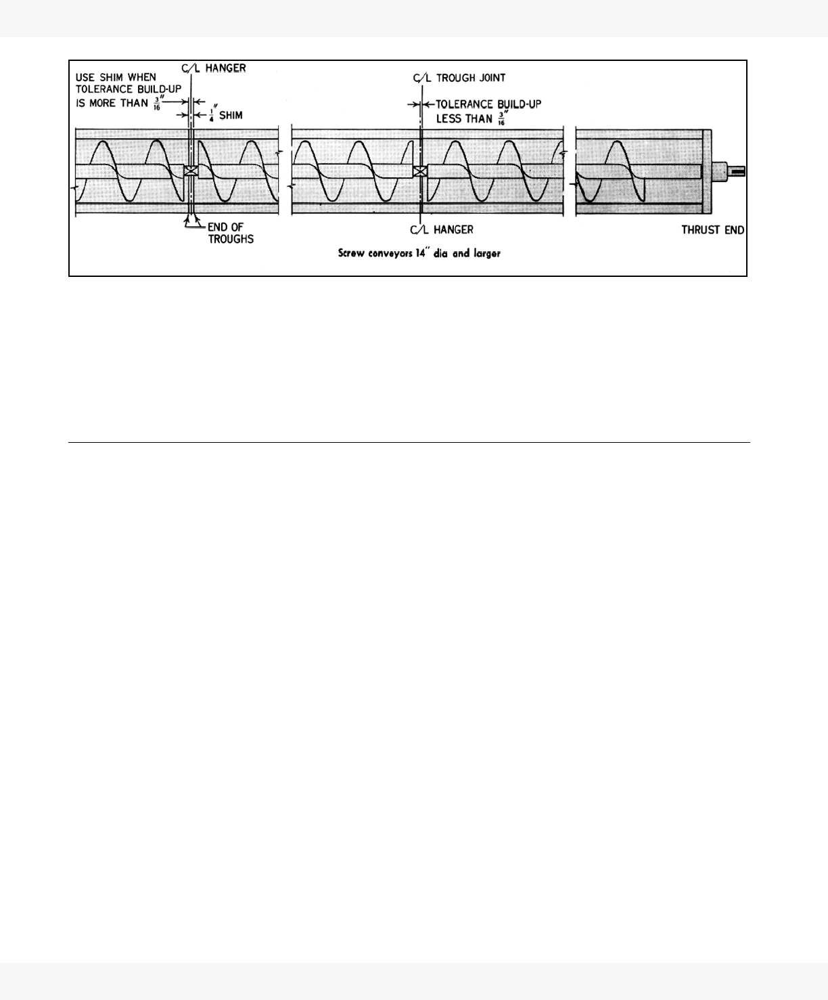
3. ASSEMBLY
3.2. CONVENTIONAL CONVEYOR SCREWS
UNION IRON - SCREW CONVEYOR
ALL MODELS
16 ISCM0308-R1
Figure 3.2 Aligning Trough Joints and Couplings with Shims
Screw conveyor troughs must be assembled straight and true with no
distortion. If anchor bolts are not in line, either move them or slot the conveyor
feet or saddle holes. Use shims as required to achieve correct alignment. Do
not proceed with installation of shafts and screws until trough has been
completely aligned and bolted down.
3.2. CONVENTIONAL CONVEYOR SCREWS
1. When shipped as loose parts, assemble bearings to trough end plates.
2. If trough ends are factory assembled with trough, check bearings and seals
for possible misalignment that may have occurred during shipment. Realign
if necessary.
3. Place troughs and trough ends in proper sequence with discharge spouts
properly located. Connect the joints loose. Do not tighten the bolts. Align
trough bottom and centerline perfectly using piano wire as shown in Figure
3.3. Then tighten joint bolts and all anchor bolts.
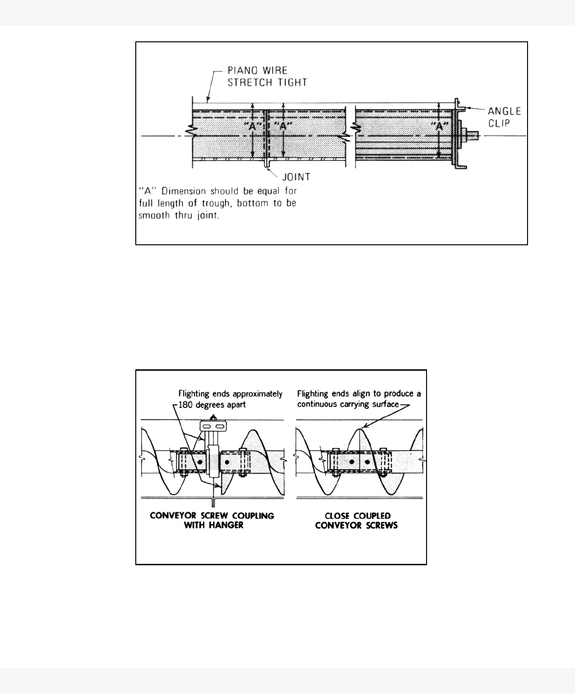
3. ASSEMBLYUNION IRON - SCREW CONVEYOR
ALL MODELS 3.2. CONVENTIONAL CONVEYOR SCREWS
ISCM0308-R1 17
Figure 3.3
4. Begin assembly of screw sections, working from the thrust end. Drive shaft
and thrust bearings are normally at the discharge end to place the conveyor
screw in tension. If conveyor is fitted with quick-connect screws, follow
instructions in Section 3.3..
5. Place the first screw section in the trough, fitting it onto the end shaft. Install
coupling bolts. If reinforcing lugs are on ends of flighting, install screw so
they are opposite the carrying side of the flight.
Figure 3.4
6. Insert coupling shaft into opposite end of conveyor pipe; install coupling
bolts.
7. If screws are not close coupled, slide hanger over coupling and bolt to
trough.

3. ASSEMBLY
3.2. CONVENTIONAL CONVEYOR SCREWS
UNION IRON - SCREW CONVEYOR
ALL MODELS
18 ISCM0308-R1
8. Pull conveyor screw away from discharge end of conveyor to seat the
thrust connection and remove play in coupling bolts.
9. Place next screw section in trough and fit onto coupling so that flighting end
is about 180° from end of flighting of first section. (See Figure 3.5.) Install
coupling bolts.
• For close coupled conveyors without hangers: Assemble screw so that
flighting at adjoining ends of screw sections align to provide a continu-
ous surface.
• In the case of material supplied on orders for “components only,” the
coupling bolt holes are drilled in only one end of the coupling shafts and
it will be necessary to mark and drill the other end in the field. Remove
shaft from screw before drilling
• Do not use screw pipe as drill jig.
10. Insert coupling shaft into opposite end of pipe; install coupling bolts. Install
hanger and pull out on pipe to remove play. (See Step 8.)
11. Go back to hanger installed previously; center the bearing between the
ends of pipes and tighten hanger mounting bolts. Revolve screw to check
alignment. If screw doesn’t turn freely, adjust hanger mountings until it
does. Then proceed with installation of next screw section.
12. Alternately assemble screw sections, couplings, and hangers (Steps 9-11)
until all screw sections except the last one have been installed. Remove
trough end to install last section.
13. Install tail shaft through end bearing and fasten into last screw section with
coupling bolts. Check freedom of rotation of entire screw.
14. When trough end seals are used, be sure shafts are centered in seal
openings.
15. Tighten collar set screws in any anti-friction bearings in trough ends and
hangers. Check and tighten all hanger assembly and mounting bolts.
16. Tighten packing land type seals only enough to prevent leakage. If
tightened excessively, they may impose a drag on the conveyor and wear
rapidly.
17. Fill waste packed type seals with enough waste packing to loosely encircle
the shaft and fill the corners. This will prevent packing from rotating with the
shaft.
18. Remove all debris from trough (bolts, nuts, shipping materials, etc.). Install
covers in proper sequence to locate inlet openings. Handle covers with
care to avoid warping and bending, and attach them with the fasteners
provided. Do not tighten excessively, especially when using gaskets, as
leaks may occur when covers are permanently kinked.
19. Install drive at proper location in accordance with separate instructions
provided. After electrical connections have been made and before handling
any material, check screw rotation for proper direction of travel. Incorrect
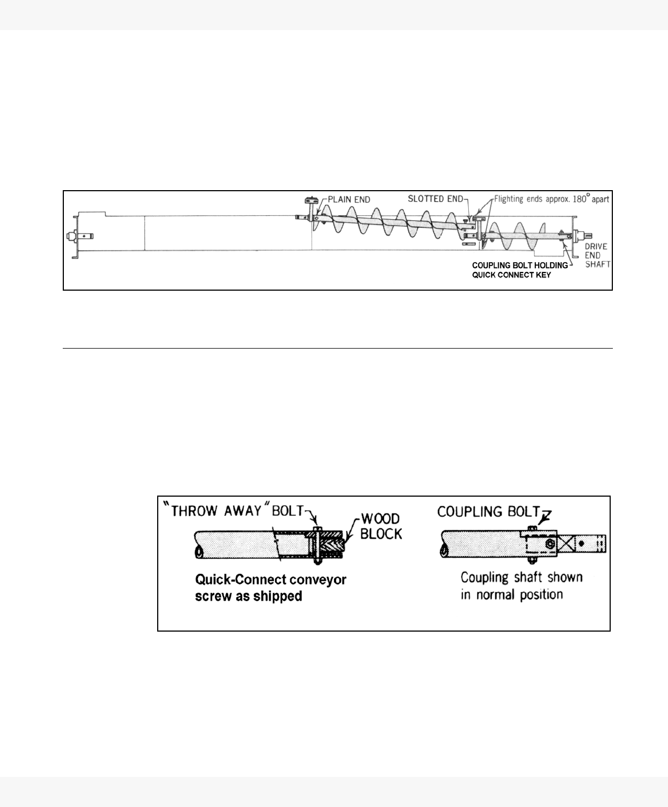
3. ASSEMBLYUNION IRON - SCREW CONVEYOR
ALL MODELS 3.3. QUICK-CONNECT SCREW ASSEMBLY
ISCM0308-R1 19
screw rotation can result in serious damage to the conveyor and to related
feeding, conveying, and drive equipment. If rotation is incorrect, have
electrician reverse motor rotation.
20. Lubricate drive and all bearings in accordance with separate instructions.
DRIVE IS SHIPPED WITHOUT OIL.
21. Firmly affix self-sticking caution markers to conveyor. Place a marker on
each side of conveyor at drive end and a marker on each section of the
conveyor trough.
Figure 3.5
3.3. QUICK-CONNECT SCREW ASSEMBLY
When conveyor is shipped with quick-connect screw, follow steps 1 - 8 in
Section 3.2. and then proceed as follows:
1. Start assembly at drive end of conveyor, with slotted ends of screw sections
toward drive end.
2. Install end shaft in drive end bearing.
3. Remove and discard “throw-away” bolts and wood block (see Figure 3.6).
For assembly, use coupling bolts provided.
Figure 3.6
4. Lower screw section into place on shaft with quick-connect keyway
downward as shown in Figure 3.5. Mount key and insert coupling bolts.
Always tighten first the coupling bolt that holds key in place.
5. Install coupling shaft at plain end of screw.
6. Install hanger on coupling shaft at plain end of screw and bolt to trough.
p
3. ASSEMBLY
3.3. QUICK-CONNECT SCREW ASSEMBLY
UNION IRON - SCREW CONVEYOR
ALL MODELS
20 ISCM0308-R1
7. Rotate screw sections that have been installed so that end of flighting at
plain end of the last section installed will be about 180° from the end of the
flighting at the Quick-Link end of the next section to be installed.
8. After installing each screw section, pull last screw to take play out of
coupling bolts and center the hanger bearing between the ends of the
pipes.
9. When all screw sections are in place, proceed with step 13 in Section 3.2.
3.3.1. SPLIT FLIGHT COUPLING AND SHAFTS
1. Assemble split flight couplings and shafts in accordance with Assembly A
(Figure 3.7) or Assembly B (Figure 3.8) depending on assembly furnished.
2. If Assembly A is furnished, assemble on proper side of hanger so that
hanger will be located at a trough joint.
3. Coupling bolt holes G (Assemblies A and B) must be drilled in field for
assembly.
4. Insert and bolt pre-drilled end of shaft number 5 into split flight coupling.
Assembly B uses two Number 5 shafts.
5. Insert un-drilled end of shaft Number 5 into adjoining screw section.
6. Draw split flight coupling into close contact with end of conveyor screw.
7. Align ends of flighting on split flight coupling and adjoining screw section to
produce a continuous surface.
8. Mark location of coupling bolt holes G from conveyor screw to Shaft
Number 5.
9. Remove Shaft Number 5 and drill bolt holes. Do not drill holes in assembly
since close tolerance bolt holes in conveyor screw pipe might be damaged
or enlarged if used as guide holes for drilling.
10. Reassemble shaft Number 5 into conveyor on proper side of hanger to
locate hanger at a trough joint. Insert coupling bolts and tighten.
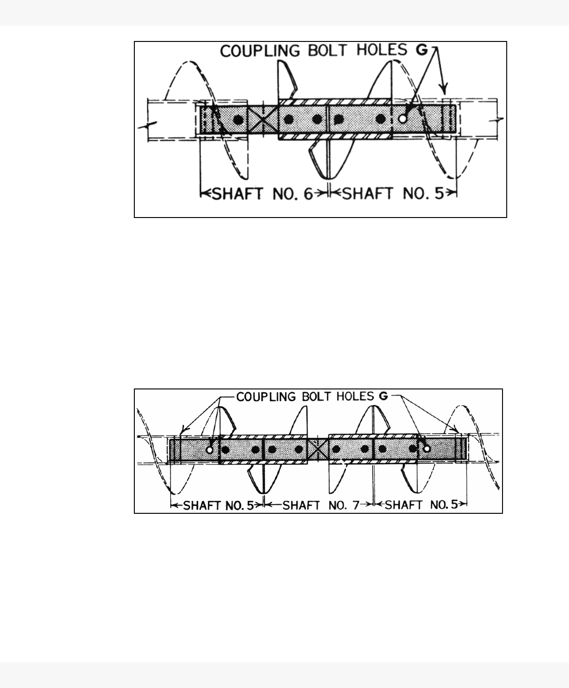
3. ASSEMBLYUNION IRON - SCREW CONVEYOR
ALL MODELS 3.3. QUICK-CONNECT SCREW ASSEMBLY
ISCM0308-R1 21
Figure 3.7 Split Flight Coupling Assembly A
11. Insert and bolt shaft Number 6 into adjoining screw section.
12. Align shafts Numbers 5 and 6. Position split flight coupling over ends of
shafts so flighting at one end is aligned with flighting at end of close coupled
screw section to produce a continuous surface.
13. Insert coupling bolts and tighten.
14. Reassemble shaft Number 5 into conveyor screw.
15. Align conveyor screws with Number 5 Shafts in place and assemble split
flight couplings and Shaft Number 7 so that ends of flighting at hanger
bearing space are approximately 180 degrees apart.
Figure 3.8 Split Flight Coupling Assembly B
16. Adjust conveyor screws so that ends of flighting on screw sections and
adjoining split flight couplings produce a continuous surface.
17. Insert coupling bolts and tighten.
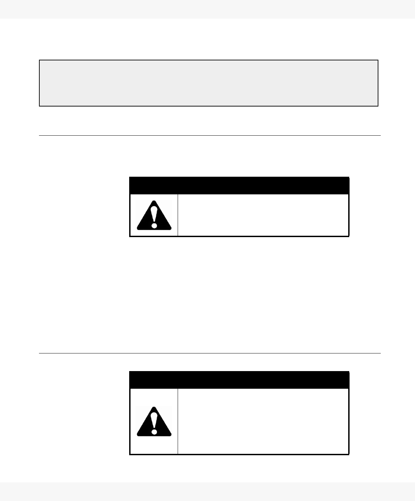
4. OPERATIONUNION IRON - SCREW CONVEYOR
ALL MODELS 4.1. PRE-OPERATION
ISCM0308-R1 23
4. Operation
4.1. PRE-OPERATION
Only people completely familiar with the safety information contained in this
manual should be permitted to operate the conveyor. The operator should
thoroughly understand the instructions before attempting use.
Because the speed of a screw conveyor is generally predetermined and no
variable speed controls are required, the only duties of a trained and competent
operator are to:
• regulate the feeding of material into the unit in a uniform and continuous
rate, and never to overfeed or overload the unit beyond its capacity;
• see that the material flows evenly and does not block the discharge
point;
• observe the safety precautions for operators outlined above.
4.2. START-UP
WARNING
Before continuing, please reread the safety information relevant to this section at the begin-
ning of this manual. Failure to follow the safety instructions can result in serious injury, death,
or property damage.
CAUTION
Before performing any internal inspections or
maintenance, ensure that a mechanical
lockout is in place on the motor starter.
DANGER
Rotating parts hazard!
To avoid serious injury or death: Keep body,
hair, and clothing away from rotating pulleys,
belts, chains, and sprockets. Keep all guards
in place and in good working order. Lock out
power before removing guard.
4. OPERATION
4.3. EXTENDED SHUTDOWN
UNION IRON - SCREW CONVEYOR
ALL MODELS
24 ISCM0308-R1
4.2.1. WITHOUT MATERIAL
1. Remember—screw conveyor drive is shipped without oil. Add oil to drive
in accordance with separate instructions.
2. Make sure before initial startup that conveyor is empty, that end bearings
and hangers are lubricated, and that all covers, guards, and safety
equipment are properly installed.
3. If conveyor is part of a material handling system, make certain that
conveyor controls are interlocked electrically with those for other units in
the system.
4. Remove section of cover and check that the direction of screw rotation in
each unite to ensure correct flow of material.
5. Operate conveyor while empty for several hours, making a continuous
check for heating of bearings, misalignment of drive, and noisy operation. If
any of these occur, proceed as follows:
a. If anti-friction bearings are used, check supply of lubricant. Either too little
or too much lubricant can cause high operating temperatures.
b. Lock out power supply and check for misalignment in trough ends,
screws, and hangers. Loosen, and readjust or shim as necessary. If
unable to eliminate misalignment, check parts for possible damage
during shipment.
c. Check assembly and mounting bolts.
4.2.2. WITH MATERIAL
1. Check that the conveyor discharge is clear before feeding material.
2. Increase feed rate gradually until rated capacity is reached.
3. Stop and start conveyor several times, and allow to operate for several
hours.
4. Shut off conveyor and lock out power supply. Remove covers and check
coupling bolts for tightness. Check hanger bearings, realign if necessary,
and retighten mounting bolts.
5. Replace covers.
4.3. EXTENDED SHUTDOWN
If conveyor will not be operated for a long period of time, you should operate it
for a period of time after the feed has been cut off in order to discharge as
much material as possible from the trough. However, there is a nominal
clearance of 1/2” between the screw and the trough, and this procedure will
allow a small amount of material to remain in the trough. Therefore, if the

4. OPERATIONUNION IRON - SCREW CONVEYOR ALL
MODELS 4.3. EXTENDED SHUTDOWN
ISCM0308-R1 25
material is corrosive, hygroscopic, or has a tendency to harden or set-up, the
trough should be cleaned completely after the conveyor is shut down and
power locked out.
5. MAINTENANCEUNION IRON - SCREW CONVEYOR
ALL MODELS 5.1. SERVICING OF CONVEYOR COMPONENTS
ISCM0308-R1 25
5. Maintenance
• Establish routine periodic inspection of the entire conveyor to ensure contin-
uous maximum operating performance.
• Practice good housekeeping. Keep the area around the conveyor and drive
clean and free of obstacles to provide easy access and to avoid interfer-
ence with the function of the conveyor or drive.
• Lock out power to motor before doing any maintenance work—preferably
with a padlock on control.
• Do not remove padlock from control or operate conveyor until covers and
guards are securely in place.
5.1. SERVICING OF CONVEYOR COMPONENTS
In most cases, this involves removing an unserviceable part and installing a
replacement. The installation procedures are outlined in “Assembly” on
page 15.
Specific instructions for the removal of various conveyor components follow.
5.1.1. CONVENTIONAL CONVEYOR SCREWS
1. To remove a section(s) of conventional conveyor screw, proceed from end
opposite the drive.
2. Remove trough end, conveyor screw sections, coupling shafts, and
hangers until all screw sections are removed, or until damaged or worn
section is removed.
3. To reassemble, follow above steps in reverse order, or see “Assembly” on
page 15.
4. Sections of conventional conveyor screw equipped with split flight
couplings may be removed individually with a minimum of disturbance of
adjacent sections.
WARNING
Before continuing, please reread the safety information relevant to this section at the begin-
ning of this manual. Failure to follow the safety instructions can result in serious injury, death,
or property damage.
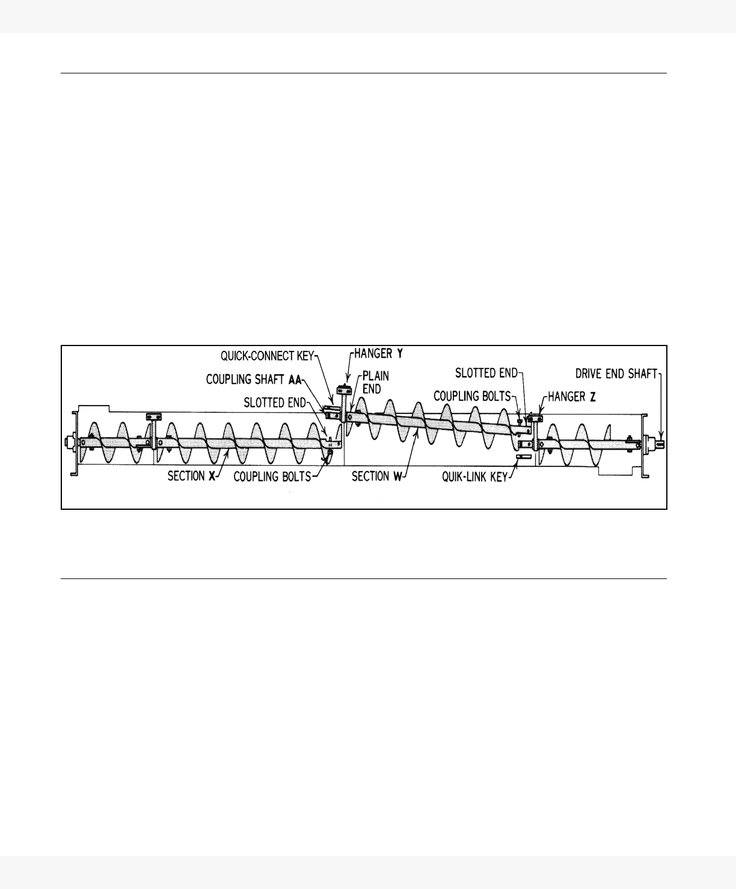
5. MAINTENANCE
5.1. SERVICING OF CONVEYOR COMPONENTS
UNION IRON - SCREW CONVEYOR
ALL MODELS
26 ISCM0308-R1
5.1.2. QUICK-CONNECT CONVEYOR SCREWS
1. Removal of quick-connect screw sections includes removal of coupling
shaft AA and hanger Y at plain end. See Figure 5.1 where section W is
being removed.
2. Rotate entire screw so that quick-connect key of section X is on top, and
key of section W is on bottom.
3. Remove coupling bolts from quick-connect end of section X.
4. Remove coupling bolts and key from section W.
5. Remove mounting bolts from hanger Y.
6. Lift conveyor screw W, hanger Y, and coupling shaft AA from adjoining
screw section X. Shift position of screw section W to clear hanger Z, and
remove from trough. To reassemble, follow above steps in reverse order or
refer to the assembly instructions.
Figure 5.1 Removal of Quick-Connect Conveyor Screw
5.1.3. COUPLINGS AND HANGERS
Replace couplings and hanger bearings when wear in either part exceeds 1/8”.
Replace coupling bolts when excessive wear causes play.
To replace ball bearing hanger elements proceed as follows:
1. Remove screw sections as necessary in accordance with instructions until
hanger to be replaced is reached and removed from trough.
2. Loosen set screws in bearing collar and remove hanger from coupling
shaft. See Figure 5.2.
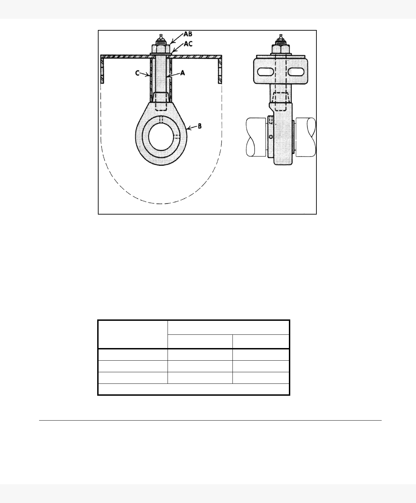
5. MAINTENANCEUNION IRON - SCREW CONVEYOR
ALL MODELS 5.1. SERVICING OF CONVEYOR COMPONENTS
ISCM0308-R1 27
Figure 5.2 Ball Bearing Hanger Assembly
3. Remove assembly nut AB and washer AC.
4. Tap on end of grease pipe A to free bearing B from hanger frame C.
5. Remove grease pipe and bearing from hanger frame.
6. Remove grease pipe from bearing.
To reassemble, follow the above steps in reverse order. Tighten nut AB using
torque values in the following torque table:
5.1.4. DRIVE END BEARINGS
To replace elements of drive shaft trough ends with double ball bearings,
proceed as follows, referring to Figure 5.3.
Table 5.1 Tightening torque for nut AB
Bearing Size,
Inches
Torque, pound-feet *
Minimum Maximum
1-1/2 to 2 100 110
2-7/16 to 3 160 180
3-7/16 240 270
* Equivalent to pounds pull on wrench 12” from nut.
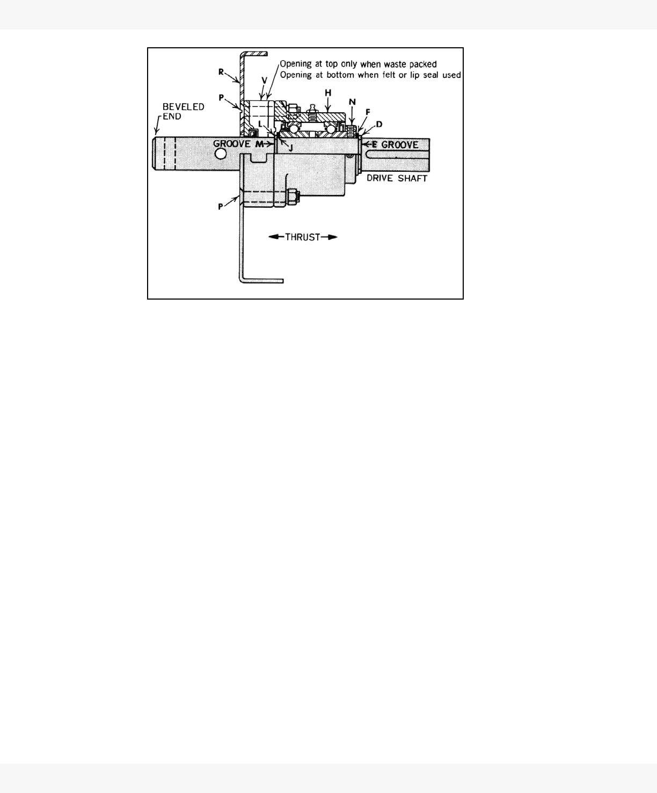
5. MAINTENANCE
5.1. SERVICING OF CONVEYOR COMPONENTS
UNION IRON - SCREW CONVEYOR
ALL MODELS
28 ISCM0308-R1
Figure 5.3 Drive Shaft Trough End With Double Ball Bearing
ASSEMBLIES WITHOUT TROUGH END SEALS
1. Thrust bearings are usually located at the drive end of conveyor. Remove
drive components such as sprockets, couplings, speed reducers, etc.,
which would prevent removal of the bearing assembly.
2. Remove conveyor coupling bolts.
3. Support conveyor in trough and remove bolts P.
4. Remove driveshaft with bearing assembly H as a unit from the trough end
plate R.
5. Remove snap ring L from groove M and slide from shaft at beveled end.
6. Remove washer J.
7. Loosen set screws N and slide bearing H from shaft at beveled end.
8. Remove washer F.
9. Remove snap ring D from groove E and slide from shaft at either end.
ASSEMBLIES WITH TROUGH END SEALS
1. Thrust bearings are usually located at the drive end of conveyor. Remove
drive components such as sprockets, couplings, speed reducers, etc.,
which would prevent removal of the bearing assembly.
2. Remove conveyor coupling bolts.
3. Support conveyor in trough and remove bolts P.
4. Remove shaft with bearing assembly H and seal assembly V from trough
end as a unit.
5. Remove trough end seal from shaft at beveled end.
5. MAINTENANCEUNION IRON - SCREW CONVEYOR
ALL MODELS 5.2. LUBRICATION
ISCM0308-R1 29
6. Follow steps 5 through 9 in Section 5.1.4.
7. To reassemble, follow the above steps in reverse order.
5.1.5. COVERS
Whenever the trough covers are removed, always check all coupling and
hanger bolts for rightness. When remounting covers, fasten with clamps
provided. Open spring-type cover clamps using a drift pin and close with a
hammer. After repeated openings and closings, it may be necessary to restore
firm grip of clamps by closing clamp jaws slightly. To do this, use a hammer as
an anvil under one jaw and tapping the other jaw with another hammer.
5.2. LUBRICATION
Frequency of lubrication will depend on factors such as the nature of the appli-
cation, bearing materials, and operating conditions. Weekly inspection and
lubrication is advisable until sufficient experience permits establishment of a
longer interval.
5.2.1. DRIVE
Lubricate the drive following separate instructions provided for the speed
reducer and the other drive components requiring lubrication. Speed reducers
are shipped without oil.
5.2.2. BALL OR ROLLER BEARINGS
Ball and roller bearings may be furnished on trough ends or as hanger
bearings. Lubricate in accordance with separate instructions provided.
5.2.3. BABBITTED OR BRONZE BUSHED BEARINGS
Babbitted or bronze bushed bearings may be furnished in trough ends or
hangers. When provision is made for grease lubrication, follow the table below
for recommended grades.
For oiless or graphite bronze, hard or chilled iron, oil-impregnated wood, or
plastic laminate hanger bearings, no lubrication is required.
Operating
Temperatures (F)
Use Grease
Equivalent to
MLGI Number
32° to 200° 2 or 3
32° to -40° 2 or 1
LIMITED WARRANTY
Seller warrants that all of the goods sold hereunder will conform to their
description in Seller's published literature current at the time the Buyer's order
is accepted, that Seller will use good material and workmanship in the
manufacture of such goods, and that such goods will conform to applicable
laws and regulations regarding purity.
Seller will repair or replace, at its discretion, any nonconforming goods (or
refund their purchase price at Seller's option), but only if Seller receives written
notice of nonconformity within 60 days after shipment and Buyer's remedies
hereunder are expressly so limited.
Seller makes no other warranties of any kind with respect to such goods
or any part thereof, express or implied. All implied warranties of
merchantability and fitness for a particular purpose are hereby
disclaimed by seller and excluded from this agreement, and such goods
are sold “as is” and with all faults.
Seller will have no liability for consequential damages of any kind,
including damages arising from bodily injury or the loss of use of such
goods or other property. Buyer releases all claims for such damages,
whether based on contract, warranties, strict liability, or negligence.
Union Iron
part of the Ag Growth International Inc. group
601 S. 27th Street, P.O. Box 1038
Decatur, IL 62525 USA
Phone: (217) 429-5148
Fax: (217) 429-5149
website: www.unioniron.com
© Ag Growth International Inc. 2013
Printed in Canada